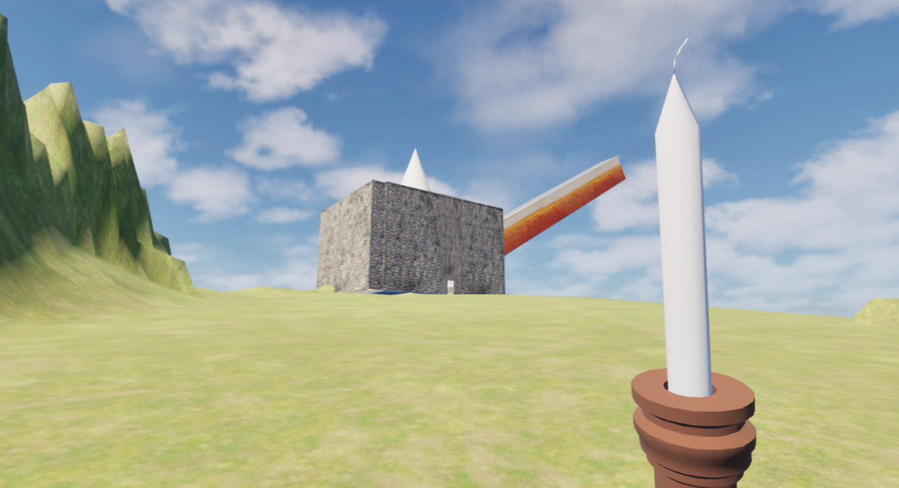
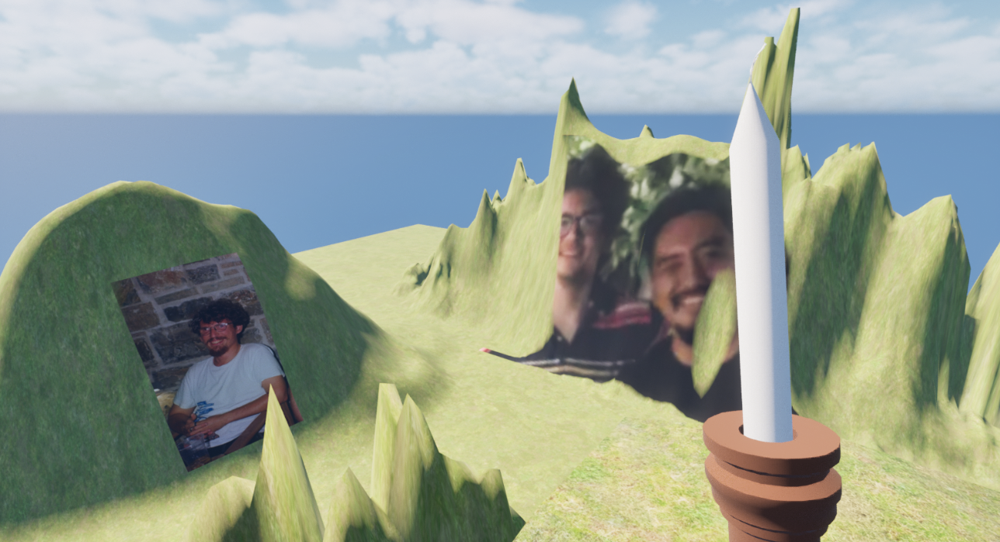
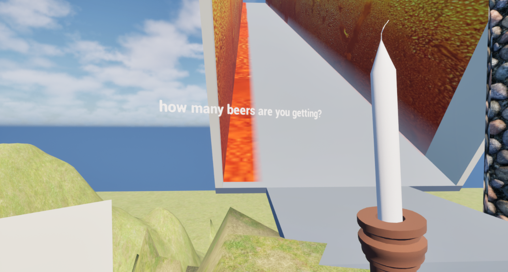
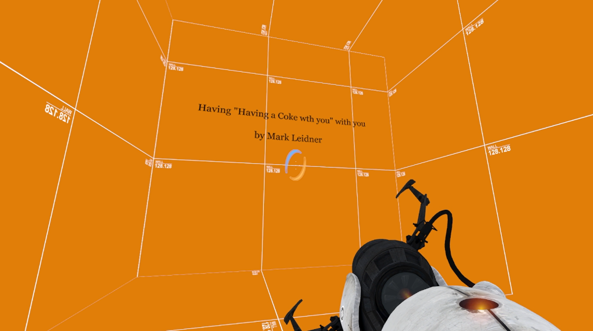
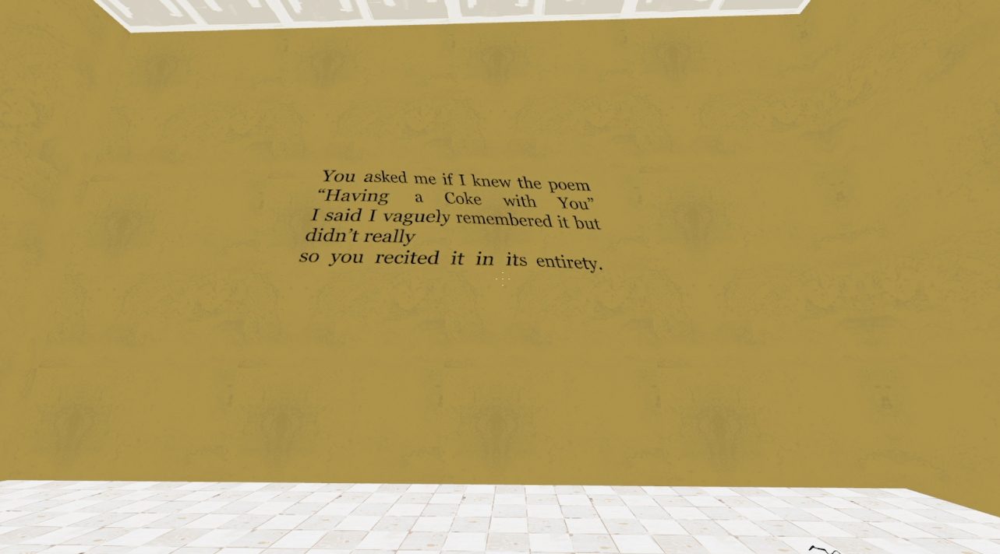
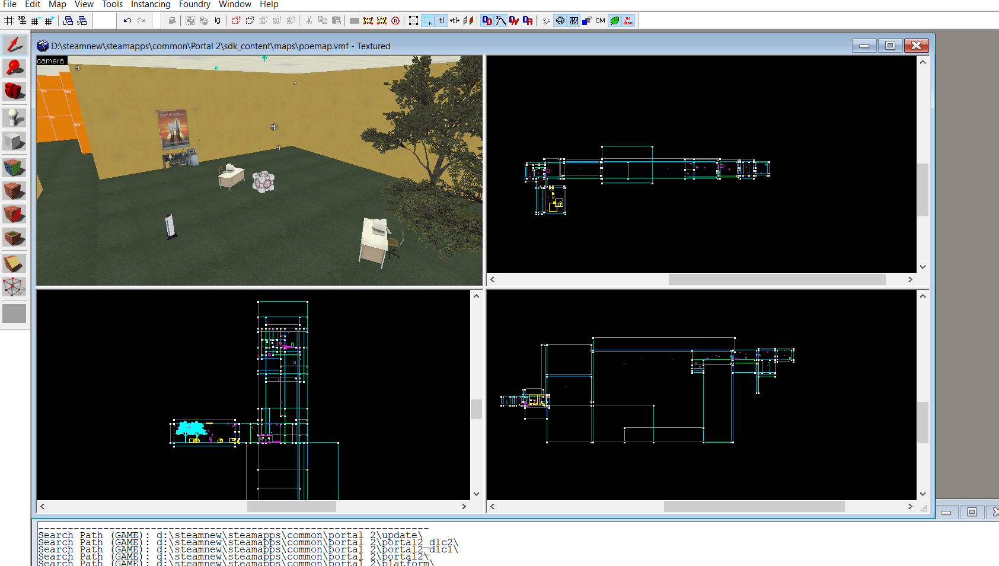
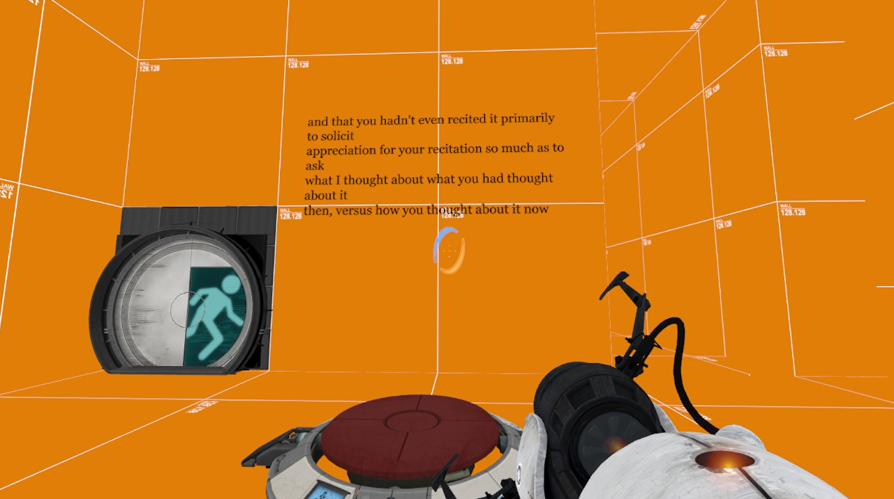

Invisible Parrot (2025)



Around october of 2025 I made my first video game, which was a way for me to process my pet parrots passing.
The video game is a poetic represenation of a night out, as a last attempt to soothe grief..




Through January to February of 2026 I made my second video game through modding Portal 2 and appropriating a (beautiful) poem by Mark Leidner called "Having "Having a coke with you" with you"
seemingly to pass off as another level in Portal, together with a puzzle, you're consuming a great poem.